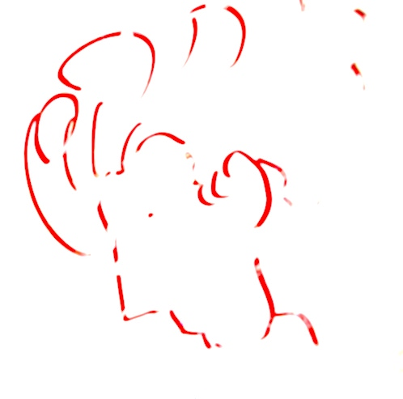

Benjamin Saff
Published Works
- Time Makes a Sharp Stone Smooth Brooklyn Aikikai Journal: Vol 3, No 2
- Living Room Dance with Izzy Moonstone Press: 2021 Featured Poets Anthology
- Calculating Time Toho Journal: Vol 3, No 1
- Minor League All American Dance Club Toho Publishing
- So Many Noises Recenter Press
- a line describes Toho Journal: Vol 1, No 1
- Considering the Burrito Marlarkey Books
- Eastern Wisdom for the Broken Heart Thought Catalog
Book Reviews
- In Review: Tokyo Ueno Station by Yū Miri Asymptote Journal
- In Review: The Samurai by Shūsaku Endō Asymptote Journal
- In Review: The Emissary by Yoko Tawada Asymptote Journal
Editing
- Rules of Sculpture (2023) Caroline Furr
- Stand While Lifting (2024, Forthcoming) Caroline Furr